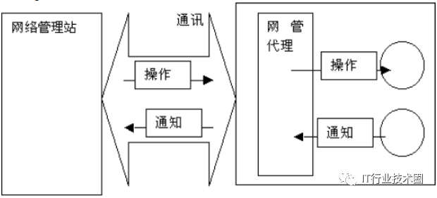
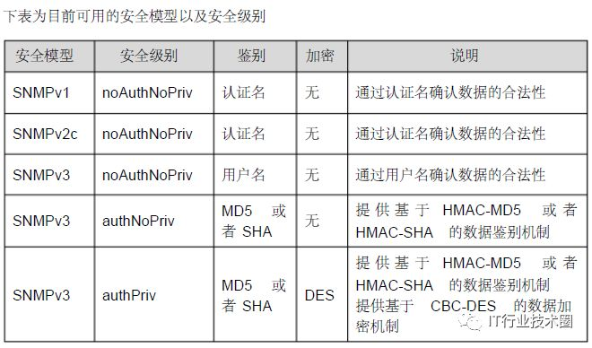

H3C交换机如何配置SNMP协议？

使用telnet 登陆设备
system-view
snmp-agent
snmp-agent community read public
snmp-agent sys-infoversion all
dis cur
save 保存
Y
配置完成。
2.概述
SNMP 是Simple Network Manger Protocol （简单网络管理协议）的缩写，到目前，因众多厂家对该协议的支持，SNMP 已成为事实上的网管标准， 适合于在多厂家系统的互连环境中使用。利用SNMP协议，网络管理员可以对网络上的节点进行信息查询、网络配置、故障定位、容量规划，网络监控和管理是SNMP 的基本功能。
SNMP 是一个应用层协议，为客户机/服务器模式，包括三个部分：SNMP 网络管理器、SNMP 代理、MIB 管理信息库；
SNMP 网络管理器，是采用SNMP 来对网络进行控制和监控的系统，也称为NMS(Network Management System) 。常用的运行在NMS 上的网管平台有HPOpenView 、CiscoView 、CiscoWorks 2000 ，锐捷网络针对自己的网络设备，开发了一套网管软件－－ Star View 。这些常用的网管软件可以方便的对网络设备进行监控和管理。
SNMP 代理（ SNMP Agent ）是运行在被管理设备上的软件，负责接受、处理并且响应来自NMS 的监控和控制报文，也可以主动发送一些消息报文给NMS 。
MIB（ Management Information Base ）是一个虚拟的网络管理信息库。被管理的网络设备中包含了大量的信息， 为了能够在SNMP 报文中唯一的标识某个特定的管理单元，MIB 采用树形层次结构来描述网络设备中的管理单元。树的节点表示某个特定的管理单元。MIB 则是网络设备的单元标识符的集合。
NMS 和Agent 的关系可以用如下的图来表示：

3.SNMP 协议版本
目前SNMP 支持以下版本：
SNMPv1 ：简单网络管理协议的第一个正式版本，在RFC1157 中定义。
SNMPv2C ：基于共同体（Community-Based ）的SNMPv2 管理架构, 在RFC1901中定义的一个实验性协议。
SNMPv3 ：通过对数据进行鉴别和加密，提供了以下的安全特性：
1. 确保数据在传输过程中不被篡改；
2. 确保数据从合法的数据源发出；
3. 加密报文，确保数据的机密性；
4.SNMP 管理操作
SNMP 协议中的NMS 和Agent 之间的交互信息，定义了6 种操作类型：
1. Get-request 操作： NMS 从Agent 提取一个或多个参数值。
2. Get-next-request 操作： NMS 从Agent 提取一个或多个参数的下一个参数值。
3. Get-bulk 操作： NMS 从Agent 提取批量的参数值；
4. Set-request 操作： NMS 设置Agent 的一个或多个参数值。
5. Get-response 操作： Agent 返回的一个或多个参数值，是Agent 对NMS 前面3个操作的响应操作。
6. Trap 操作： Agent 主动发出的报文，通知NMS 有某些事情发生。
5.SNMP 安全
SNMPv1 和SNMPv2 版本使用认证名用来鉴别是否有权使用MIB 对象。为了能够管理设备，网络管理系统(NMS) 的认证名必须同设备中定义的某个认证名一致。
一个认证名可以有以下属性:
只读(Read-only) ：为被授权的管理工作站提供对所有MIB 变量的读权限。
读写(Read-write) ：为被授权的管理工作站提供对所有MIB 变量的读写权限。
在SNMPv2 的基础上， SNMPv ３通过安全模型以及安全级别来确定对数据采用哪种安全机制进行处理； 目前可用的安全模型有三种类别： SNMPv1 、SNMPv2C 、SNMPv3 。

6.SNMP 引擎标识
引擎标识用于唯一标识一个SNMP 引擎。由于每个SNMP 实体仅包含一个SNMP 引擎，它将在一个管理域中唯一标识一个SNMP 实体。因此， 作为一个实体的SNMPv3代理器必须拥有一个唯一的引擎标识，即SnmpEngineID 。
引擎标识为一个OCTET STRING ，长度为5～32 字节长。在RFC3411 中定义了引擎标识的格式:
前4 个字节标识厂商的私有企业号（由IANA 分配），用HEX 表示。
第5 个字节表示剩下的字节如何标识：
0：保留
1：后面4 个字节是一个Ipv4 地址。
2：后面16 个字节是一个Ipv6 地址。
3：后面6 个字节是一个MAC 地址。
4：文本，最长27 个字节，由厂商自行定义。
5：16 进制值，最长27 个字节，由厂商自行定义。
6-127 ：保留。
128-255 ：由厂商特定的格式。
资源分享